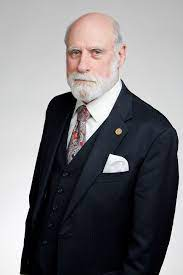

Paul Baran |
 Vannevar Bush |
 Vinton Cerf |
 Douglas Engelbart |
 Robert E. Kahn |
 J.C.R. Licklider |
 Robert Metcalfe |
 Lawrence Roberts |
Vinton Cerf (1943. június 23-án)
Amerikai internetes úttörő, és az " internet atyja " egyikeként ismerik el , megosztva ezt a címet a TCP/IP - vel . -fejlesztő Bob Kahn . Tiszteletbeli okleveleket és kitüntetéseket kapott, amelyek közé tartozik a National Medal of Technology , a Turing-díj , a Presidential Medal of Freedom , aMarconi-díj és tagság a National Academy of Engineering -ben.
Cerf 1973 és 1982 között az Egyesült Államok Védelmi Fejlett Kutatási Projektek Ügynökségénél (DARPA) dolgozott, és különböző csoportokat finanszírozott a TCP / IP, a csomagrádió (PRNET), a csomag műholdas (SATNET) és a csomagbiztonsági technológia fejlesztésére.
Forrás:Wikipédia